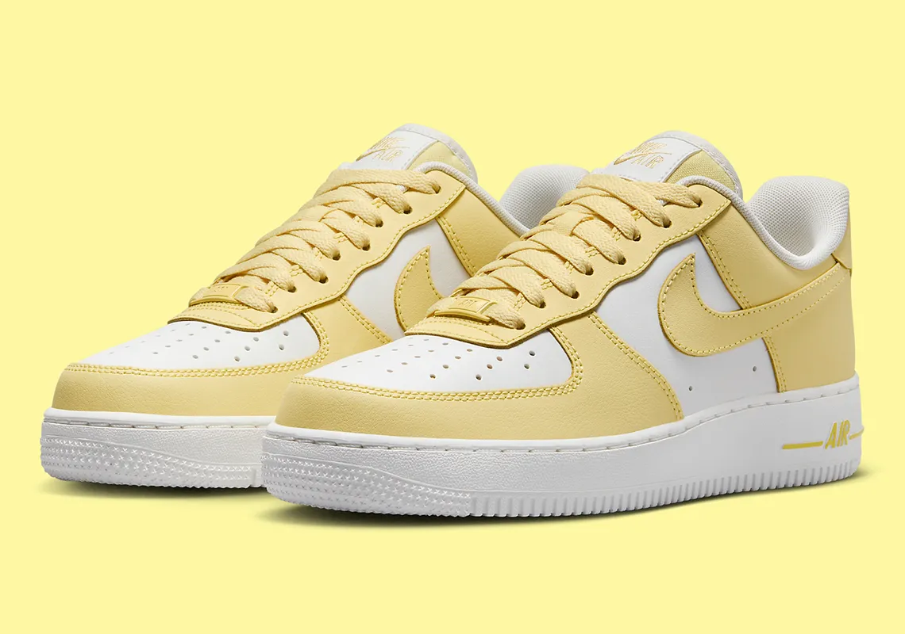

Born x Raised es un reconocimiento al valor de la cultura en la esencia de una comunidad. Una marca que celebra los diferentes matices que hacen singular estos escenarios que hoy se representan en esta nueva colaboración de los Nike SB Dunk Low Born x Raised.
Desde el Año del Dragón hasta el Día de San Valentín, el Swoosh ya ha comenzado a sentar las bases para la primera mitad de 2024.
